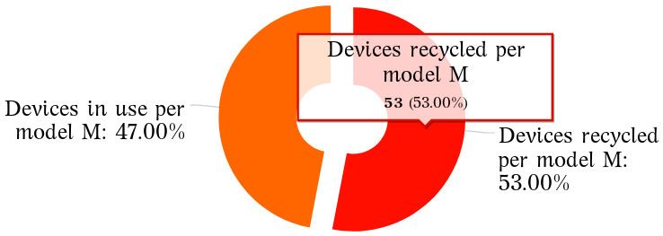
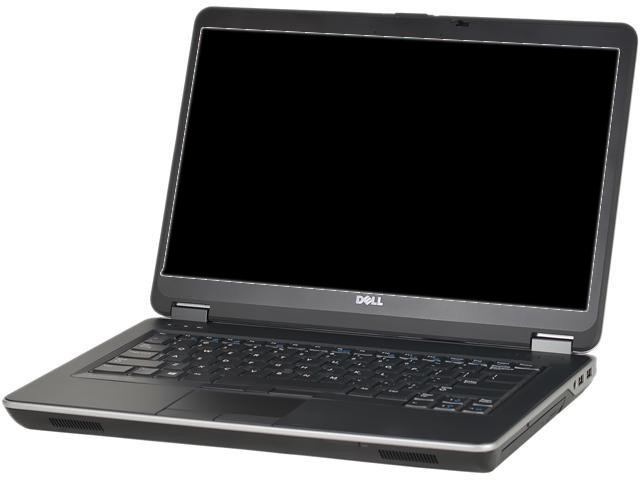

name: inverse layout: true class: center, middle, inverse --- #Circular consumption and production of electronic devices An approach to measuring durability, upgradeability, reusability, obsolescence and premature recycling [comment]: <> (Consumers use the same electronic devices for the longest time, either internally, or by collaborating with external agents so that these devices are reused and recycled properly, but recycled no prematurely, only when they can no longer be used or reused by anyone else. ) .footnote[Go to [project site](https://www.ereuse.org)] --- layout: false ## Agenda *** - Measures: - Hours of device usage [comment]: <> (erwre) - Use value of devices [comment]: <> (4234) - Usage rate of a model [comment]: <> (4234) - Recycling rate of a model [comment]: <> (4234) - Metrics: - Usage hours per device [comment]: <> (4234) - Durability per model in usage hours [comment]: <> (4234) - Performance in usage hours per device [comment]: <> (4234) - Upgradeability [comment]: <> (4234) - Reusability [comment]: <> (4234) - Reusability Potential [comment]: <> (4234) - Premature Recycling [comment]: <> (4234) - Obsolescence of a model - Indicators - Circular Consumption & Production - Discussion and Conclusions [comment]: <> (4234) --- template: inverse ## Measures --- layout: false .left-column[ ## Measures ###U: Usage hours per device ] .right-column[ <img src="./imgs/calendar.jpeg" alt="drawing" width="80" align="right" style="padding-left: 0px; padding-bottom: 0px;padding-top: 0px;padding-right: 0px"/> ##Usage hours per device *** ###A measure that indicates the number of hours that a particular device has been in usage. > Capture method: Extracted using a software that inspects the attribute "Power-On Time Count" stored on the memory of the Hard Drive Controller. [comment]: <> (Esta información no se pierde cuando borras el disco duro) <img src="./imgs/harddrive.jpg" alt="drawing" width="205" align="middle" style="padding-left: 0px; padding-bottom: 0px;padding-right: 0px;padding-top: 30px;"/> ] --- .left-column[ ## Measures ###U: Usage hours per device ] .right-column[ <img src="./imgs/calendar.jpeg" alt="drawing" width="80" align="right" style="padding-left: 0px; padding-bottom: 0px;padding-top: 0px;padding-right: 0px"/> ##Usage hours per device *** > **U: Usage hours per device D** > U(D) = `∑` usage hours of all.red[*] hard drives used in D [comment]: <> (More math symbols: https://sites.psu.edu/symbolcodes/codehtml/#math, More online charts in https://live.amcharts.com/new/edit/) <img src="./imgs/Hours-of-lifecycle-usage-per-device.jpeg" alt="drawing" width="500" align="middle" style="padding-left: 10px; padding-bottom: 20px;padding-top: 30px;padding-right: 20px"/> .footnotetext[**Note**: .red[*] In order to be able to count the hours of a device that has had several hard disks, before replacing the disk, this must be erased with a software that publishes the Hours of in the blockchain of eReuse.org. In the example the three discs sum 95.000 hours] ] --- layout: false .left-column[ ## Measures ###Usage hours per device ###Use value per device ] .right-column[ ##Use value per device *** ###A measure (evaluative) that score of the performance or use value .red[*] of a device. > Aggregates in a single value the measures for all its components (disc, memory, processor, etc...). The resulting value ranges from 0 to 5, never reaching 5. [comment]: <> (For example, if the write speed of a hard drive is at percentile 10, this feature would get 10% of the possible points of the hard drive's speed feature. The characteristics of the components (e.g. write/read speed, size) and the components (e.g. disk, memory) are then merged together by weighted harmonic averages. ) > A software collects the performance of the devices at component level and scores them according to a comparison with other devices registered in the system. ] .footnotetext[**Note**: .red[*] We refer by "use value" to the capacity of a device to satisfy a need, in our case of computing (storing, processing, viewing data, etc.), and not to the "exchange value" of a device on the market. The use value of a device over time tends to decay as its performance declines to lower percentiles.] --- .left-column[ ## Measures ###Usage hours per device ###Use value per device ###Usage rate of a model ] .right-column[ <img src="./imgs/percentage.png" alt="drawing" width="50" align="right" style="padding-left: 0px; padding-bottom: 0px;padding-top: 0px;padding-right: 0px"/> ##Usage rate of a model *** ###Measure the rate of devices per model still in usage. > **UM: The Usage rate of a given model M** > UM(M) = (Devices in use of model <sub>M</sub>) `/` (Total of devices of model <sub>M</sub>) [comment]: <> (More math symbols: https://sites.psu.edu/symbolcodes/codehtml/#math, More online charts in https://live.amcharts.com/new/edit/) <img src="./imgs/usage-rate.png" alt="drawing" width="500" align="middle" style="padding-left: 0px; padding-bottom: 20px;padding-top: 10px;padding-right: 50px"/> ] --- .left-column[ ## Measures ###Usage hours per device ###Use value per device ###Usage rate of a model ###Recycling rate of a model ] .right-column[ <img src="./imgs/percentage.png" alt="drawing" width="50" align="right" style="padding-left: 0px; padding-bottom: 0px;padding-top: 0px;padding-right: 0px"/> <img src="./imgs/recycling.jpg" alt="drawing" width="50" align="right" style="padding-left: 0px; padding-bottom: 0px;padding-top: 5px;padding-right: 3px"/> ##Recycling rate of a model *** ###Measure the rate of devices recycled per model > **RM: The Recycling rate of a model M** > RM(M) = (Devices recycled of model <sub>M</sub>) `/` (Total of devices of model <sub>M</sub>) [comment]: <> (More math symbols: https://sites.psu.edu/symbolcodes/codehtml/#math, More online charts in https://live.amcharts.com/new/edit/)  ] --- template: inverse ## Metrics --- .left-column[ ## Metrics ###Durability per model in usage hours ] .right-column[ ##Durability per model in usage hours *** ###Indicates us the estimated duration of operation in hours that a device model can reach to have > **D: Durability per model M** > D(M) = The 90th percentil of the lifecycle usage hours per model M > [comment]: <> (ccc) .first[ Model | Manufacturer | Model Durability ------------------------------ | --------------------- | ------------- 7000 | Lenovo | 53.534 EB1007 | Asus | 51.145 HP Compaq 6005 | Hp | 44.198 ] ] --- .left-column[ ## Metrics ###Durability per model in usage hours ###Performance in usage hours per device ] .right-column[ ##Performance in usage hours per device *** ###Indicates the extent to which this device has been used compared to other devices of the same model >**P: Performance in usage hours per device of model M** >P(M) = Usage hours of a device `/` Durability of the model (M) [comment]: <> (ccc) .first[ | Model | Man. | HDD Hours | Model Durability | Performance | |------------------------------------ |------------------- |------------------------ |----------------- |--------------------------------- | | Veriton M400 | Acer | 65.332 | 30.043 | 217% | | HP Compaq 6005 Pro | Hp | 64.228 | 44.198 | 145% | ] ] --- .left-column[ ## Metrics ###Durability per model in usage hours ###Performance in usage hours per device ###Upgradeability ] .right-column[ ##Upgradeability *** ###Indicates the potential for improvement that a device has. >**UP: Upgradeability of a device** >P(M) = 1 – (Device Use Value `/` Maximum model Use Value) [comment]: <> (ccc) .first[ | Model | Man. | UV | Max UV | Upgradeability | |------------------------------- |-------------- |------------ |------------------------ |--------------------------------- | | Latitude E6300 | Dell | 1,66 | 3,92 | 58% | | HP ProBook 4500 | Hp | 3,93 | 3,95 | 1% | ] .footnotetext[**Note**: .red[*] UV: Use value of a device or scoring of the performance of a device.] ] --- .left-column[ ## Metrics ###Reusability ] .right-column[ ##Reusability *** ###Indicates how reusable a device is >**R: Reusability per device** >R(D) = % devices of a model in usage phase with similar use value ```remark Before getting rid of my laptop Dell Latitude model E6440 with value of use 3. I check that there are 70% of these still in operation. I can safely say that it is 70% reusable. ``` [comment]: <> (ccc) ] --- .left-column[ ## Metrics ###Reusability ###Reusability Potential ] .right-column[ ##Reusability Potential *** ###Indicates how reusable a device is if we upgrade it. >**R: Reusability potential per device** >R(D) = % devices of a model in usage phase with upgraded use value ```remark Before discard of my laptop Dell Latitude model E6440 with value of use 3. I check that there are 90% of these with similar or upgraded value still in operation. I can safely say that it is 90% potentially reusable. ``` [comment]: <> (ccc) ] --- .left-column[ ## Metrics ###Reusability ###Reusability Potential ###Premature Recycling ] .right-column[ ##Premature Recycling *** ###Indicates the reusability potential we are discarding if we recycle (destroy) the device. >**PR: Premature Recycling per device** >PR(D) = Reusability Potential ```remark I discard for recycling my laptop Dell Latitude model E6440, with a 90% Reusability Potential. I am prematurely recycling 90% of my laptop. ``` [comment]: <> (ccc) ] --- .left-column[ ## Metrics ###Reusability ###Reusability Potential ###Premature Recycling ###Obsolescence of a model ] .right-column[  ##Obsolescence of a model *** ###Indicates the dificulty of using a device which, even having good performance, is in low usage. >**O: Obsolescence of a model M** >We define a low Usage Rate threshold as around 30%. >O(M) = The maximum difference between the low.red[*] Usage Rate threshold and the top Usage Rate with same Usage Value ```remark I have to discard my laptop model X with value of use 3, it have a Usage Rate of 30%, instead, users of the Y model with the same Value of Use have a Usage Rate by 80%. The obsolescence of my X model is at least of 50% (80%-30%). ``` [comment]: <> (ccc) ] .footnotetext[**Note**: .red[*] A model should become obsolete because its use value is low and not for other reasons; if in a model we find a set of devices that still have use value to be in use, but are discarded, it means that there is some kind of obsolescence that is not a function of the performance of the model. For example: impossibility to upgrade it, repair it, use it with other software, etc ...] --- template: inverse ## Indicators --- .left-column[ ## Indicators ###Circular Consumption ] .right-column[ ##Circular Consumption of Devices *** ###Consumers **use** the same electronic devices for the longest time, either internally, or by collaborating with external agents so that these devices are **reused** and **recycled** but not **prematurely**. >- The durability: choose the most durable.red[*] models and try to upgrade them as possible. >- Premature recycling: choose partners that reuse (with upgrade) and recycle only when the reusability potential is low (low value of use). >- Recycling: choose partners than ensure recycling, ask them for this traceability of recycling. [comment]: <> (ccc) ] .footnotetext[**Note**: .red[*] For new models this approach do not let to know durability, consumers can base their election on brand durability history ] --- .left-column[ ## Indicators ###Circular Production of Devices ] .right-column[ ##Circular Production of Devices *** ### Consumers are **able** to do a circular consumption, products are not obsolets, and customers are not incentivized to recycle, but not prematurely >- Circular Consumption: Durability, Upgradeability and Reusability >- Obsolescence: Consumers are forced to recycle them [comment]: <> (ccc) ] --- template: inverse ## Conclusions and discussion [comment]: <> (https://www.linkedin.com/pulse/delete-thank-you-slide-how-end-your-presentation-brian-mccarthy/) --- ## Conclusions and discussion [comment]: <> (ccc) - 1 - 2 - 3 --- template: inverse #Circular consumption and production of electronic devices An approach to measuring durability, upgradeability, reusability, obsolescence and premature recycling .footnote[Go to [project site](https://www.ereuse.org)] --- template: inverse ## Backup